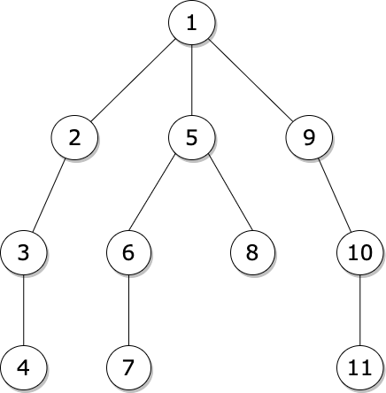
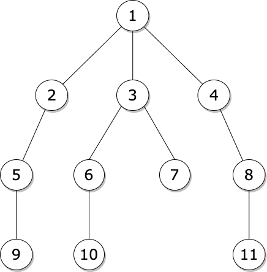

Depth-first search (DFS) is an algorithm for traversing a tree. It starts
traversing from the root node and explores as far as possible along each branch before backtracking.
Usually uses stack to find the shortest path. In geeral, DFS is faster than
BFS. Time complexity: O(V+E)

Breadth-first search (BFS) is an algorithm for searching a tree. It starts
traversing from the root node and explores all nodes at the present depth prior to moving on to the
nodes at the next depth level. Extra memory, usually a queue, is needed to keep track
of the child nodes that were encountered but not yet explored. It is usually a better option when
target is closer to source. Time complexity: O(V+E)